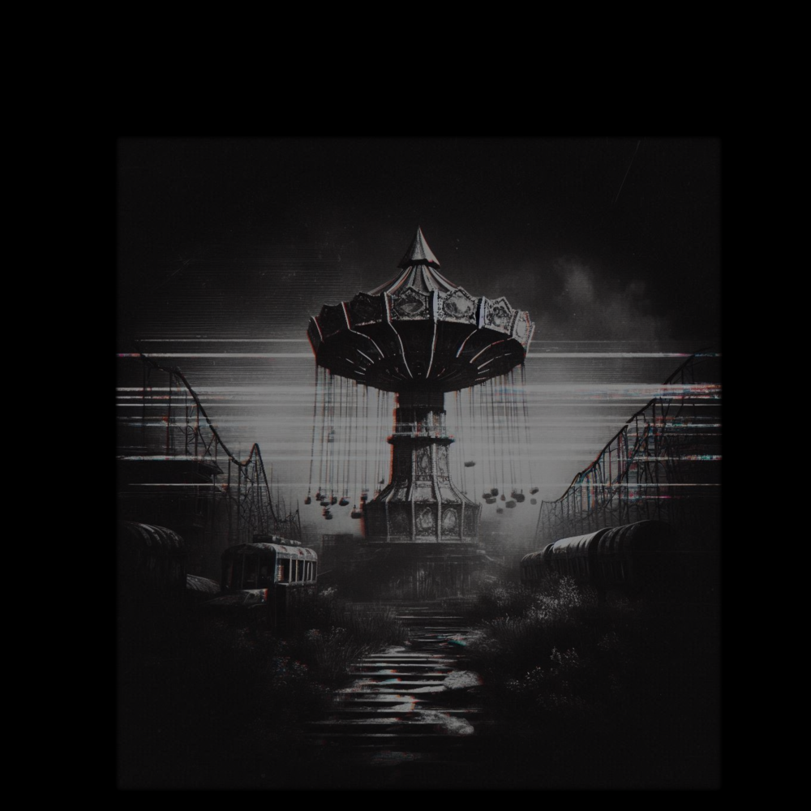

Cathode Reality Tales
Story 6- "The Ride"
(written by: Louis Anthony)
- - - -
In a dimly lit room, the only source of light is the flickering of an old television set casting eerie shadows along the walls. The screen crackles to life revealing a figure upon the screen shrouded in a haze of static and smoke. “Welcome, viewers, to Cathode Reality Tales.” The voice was smooth, almost hypnotic. The figure stepped closer, and the static resolved into the form of a middle-aged man dressed in a sleek, dark suit.
“Tonight,” the man continued, his eyes piercing through the screen, “we peel back the layers of your screen to reveal a world where reality twists and turns, and the familiar becomes the grotesque. I am your guide, Ray Toob. In the seemingly innocent world of amusement, where joy and laughter reign, darkness lurks behind the thrills and chills. A ride that promises excitement, but delivers a sinister twist.”
“As the thrill of amusement turns into dread, our group of friends realizes that the ride's true horror lies far deeper than they ever imagined.”
Ray let the silence stretch, the tension in the room palpable, “Join us as we plunge into the depths of terror outside the small town of Reddage with... another ride.”
- - - -
"Come on guys," the teen girl with glasses and sandy brown hair shouted to her group of five friends as the ground cracked and crunched beneath her feet. The old worn-out path in the woods before the six friends seemed to disappear into the thick woods.
"Who voted Danielle all-mighty-queen-leader?" a taller female with dark hair in a ponytail, wearing a basketball jersey said with a playful tone as she rough-housed with a larger male.
"Well, Randy, do you know where we're going?" asked a giggling blonde girl with pigtails.
"Thanks, Molly, but as I was about to point out, nobody made me leader or anything, it was just my idea to check out the abandoned amusement park in the woods," Danielle said before turning back and continuing to lead them towards their destination.
"I thought we were going to an actual amusement park?" the shortest male teen said with a somewhat puzzled look and tone.
Everyone stopped what they were doing and looked at each other trying to remember which it was for a moment. The larger male teen who was in a headlock from Randy broke the silence, "It was still Danielle's idea."
"Shut up Gomer!" Randy jokingly exclaimed and started to rub her knuckles across the top of his head.
"It's Dan," he said with a smile, he grabbed Randy's leg and hoisted her laterally* across his shoulders, and started to stretch her out. "Torture Rack!" He exclaimed in a goofy wrestling tone.
"I give, I give," Randy said laughing as she tapped his bicep.
Another male teen with short dark hair and glasses stepped between the two. "Will you guys cut it out?" He said with a stern look at Randy and Dan. "And who cares if it's the abandoned park or a working one? Let's just go see it."
"Geez, Chris, way to just poo all over the party." Molly said.
"Yeah what's got your panties in a bunch?" Danielle said.
"Girlfriend problems? Or is it your special time?" Dan fired off with a poorly veiled comedic tone.
"Leave him alone guys, that's just his normal brooding dark self," the short male teen said stepping up beside Chris.
"Thanks Tony," Chris said sarcastically.
Tony, not getting the sarcasm smiles goofily as he replies, "You're welcome buddy."
Everyone laughs, even Chris cracks a smile before shaking his head.
It was then they saw it rise up before them. The brilliant towering centerpiece, the dilapidated old swing carousel. The midway leading up to it was overgrown with thick dense foliage. In the distant background along either side were worn down old coaster tracks, one great big wooden one and another smaller metal one opposite.
"Rhell rhat rholves rhat rhystery, Rhaggy," Dan said comedically in a Scooby Doo voice.
"Like totally Scoob, You think there's any food left over there?" Tony said in his best Shaggy as the two started to head towards the ramshackle food stands.
"Guys wait!" Danielle shouted after them.
They stopped and looked back to see their friends' faces twist in horrified confusion. They all watched as reality appeared to horizontally crack and fracture before flashing a blinding white light. When the light faded the amusement park was completely alive again.
A man bumped into Chris and spilled ice cream on his shirt. Chris walked over to a nearby stand, grabbed a handful of napkins, and began trying to get the ice cream off his shirt while expressing his disgust.
"I don't think we're in Kansas anymore, Toto," Dan said.
"You can say that again, Dorothy," Tony said next to him, neither one of the teens' faces changing their shocked expressions.
"I don't think we're in Kans-" Dan started to say before Tony slapped him and the two started laughing.
The rest of the group looked around trying to comprehend what was happening. They were all certain that the park had been in disrepair only a moment ago. "Okay, now I'm really curious... were we looking for the living park or the dead one?" Randy asked and everyone looked at Danielle.
"Uh... Uhmmm...." Danielle stammered.
Tony noticed Danielle starting to freak out at her inability to find the answer and decided to save the day, "Is that a house of mirrors? I've never been in a house of mirrors," he said.
"What?!" Molly exclaimed.
"You lie," Randy stated.
"Yeah there's no way," Dan agreed.
Tony shrugged, "I dunno what to tell you guys. I've never been in a house of mirrors."
"Thank-you," Danielle mouthed to him as they all turned to drag Tony towards the funhouse.
"Guys, I think this is gonna stain," Chris said as he followed after them, still trying to get all the ice cream out of his shirt.
The group went through the house of mirrors and came out laughing and smiling. They had seemingly forgotten that the whole park had been a shell of itself only moments ago when Molly reminded them. "Okay, after that I'm pretty confident that after our little discussion about whether the park was open or not, we all experienced some kind of shared delusion."
"Okay nerd," Chris said.
"You've still got ice cream on your shirt," Tony replied instantly, pointing at the stain.
Chris started to check and the group laughed as he realized the joke.
"Seriously though... did we all not see this park was abandoned before the funhouse?" Molly reiterated her concerns.
"Dog with a bone," Randy said half-joking.
Before any of them could say anything else, Danielle jumped in. “Shall we check out the centerpiece of the park?” She motioned towards the swing carousel.
The swing carousel stands tall, bright, vibrant lights adorning its canopy. An inviting glow casts over the polished metal seats and gleaming chains. The carousel’s intricate design is a marvel, with meticulously painted scenes of whimsical landscapes and playful animals. As it gently spins in the light breeze, it beckons them closer.
Tony stares at the ride, shaking his head. He thought briefly about faking bravado before his friends but ultimately decided against lying. "No way I’m getting on that. I don't trust those swings to hold up."
Chris scoffs, rolling his eyes. "Weak. That’s the whole fun of it—the adrenaline rush."
Randy, trying to mask her own fear, chimes in. "I’ll stay with Tony. Someone has to keep him company." The rest of the group laughs and climbs into the swings. "Between you and me, I feel the same way," Randy says to Tony as they watch their friends get in line. Tony nods his understanding and points to a nearby food stand. Randy happily accetps.
The rest of the group's excitement was palpable. The carousel jerks to life, lifting them higher and higher into the air. Initially, their laughter echoes through the park, but as the ride picks up speed, a loud cracking sound is heard. The chains begin to fray, the metal groaning under the strain.
Panic sets in. The swings whip around faster, the laughter turning into screams. One by one, the chains snap, hurling bodies into the sky in a chaotic blur of terror and tragedy. Tony and Randy watch in horror from below as their friends are flung to their untimely demise. Before they could react, the final chains gave way, sending the swings crashing down, taking Tony and Randy with them.
The group of six teens sat up slowly on the ground in the woods. Each member of the group groaned and wondered where they were. It didn't take long before one of the teens said they were headed to the amusement park when they all got excited
"Come on guys," the teen girl with glasses and sandy brown hair shouted to her group of five friends as the ground cracked and crunched beneath her feet. The old worn-out path in the woods before the six friends seemed to disappear into the thick woods.
"Who voted Danielle all-mighty-queen-leader?" a taller female with dark hair in a ponytail, wearing a basketball jersey said with a playful tone as she rough-housed with a larger male.
"Well, Randy, do you know where we're going?" asked a giggling blonde girl with pigtails.
"Thanks, Molly, but as I was about to point out, nobody made me leader or anything, it was just my idea to check out the abandoned amusement park in the woods," Danielle said before turning back and continuing to lead them towards their destination.
"I thought we were going to an actual amusement park?" the shortest male teen said with a somewhat puzzled look and tone.
Everyone stopped what they were doing and looked at each other trying to remember which it was for a moment. The larger male teen who was in a headlock from Randy broke the silence, "It was still Danielle's idea."
"Shut up Gomer!" Randy jokingly exclaimed and started to rub her knuckles across the top of his head.
"It's Dan," he said with a smile, he grabbed Randy's leg and hoisted her laterally* across his shoulders, and started to stretch her out. "Torture Rack!" He exclaimed in a goofy wrestling tone.
"I give, I give," Randy said laughing as she tapped his bicep.
Another male teen with short dark hair and glasses stepped between the two. "Will you guys cut it out?" He said with a stern look at Randy and Dan. "And who cares if it's the abandoned park or a working one? Let's just go see it."
"Geez, Chris, way to just poo all over the party." Molly said.
"Yeah what's got your panties in a bunch?" Danielle said.
"Girlfriend problems? Or is it your special time?" Dan fired off with a poorly veiled comedic tone.
"Leave him alone guys, that's just his normal brooding dark self," the short male teen said stepping up beside Chris.
"Thanks Tony," Chris said sarcastically.
Tony, not getting the sarcasm smiles goofily as he replies, "You're welcome buddy."
Everyone laughs, even Chris cracks a smile before shaking his head.
It was then they saw it rise up before them. The brilliant towering centerpiece, the dilapidated old swing carousel. The midway leading up to it was overgrown with thick dense foliage. In the distant background along either side were worn down old coaster tracks, one great big wooden one and another smaller metal one opposite.
The group stood there in silence. Staring at the unsettling image. Something felt very wrong. The six teens shared the same look.
Nope.
The teens turned and went to their homes without another word about the amusement park.
It was later that evening while Danielle was eating dinner, she heard the strange news break from the Television in the other room. "We apologize for this interruption in your regularly scheduled program ladies and gentlemen, but we are faced with an unprecedented crisis. In a stunning and terrifying revelation, scientists have confirmed that a massive meteor, previously calculated to pass safely by Earth, is now on a direct collision course with the planet. This unexpected and catastrophic development is set to culminate in a devastating impact with the small town of Reddage. The collision, predicted to occur anytime within the next 48 hours, will unleash a force capable of exterminating humanity in a manner eerily reminiscent of the event that wiped out the dinosaurs," Danielle could hear the terror in the anchors voice.
The anchor continued, "Initial scientific assessments had assured that the meteor would miss Earth by a safe margin, but recent recalculations have revealed a grave error."
Ring, ring. The synthetic sound of the landline telephone startled Danielle, who jumped up to answer it.
It was Tony, "Are you seeing this?"
"Yeah," She replied grimly. Both of them feel a strong sense of foreboding unease. They discussed meeting up with the rest of the group, but the call was cut short by the meteor crashing into the town.
The group of six teens sat up slowly on the ground in the woods. Each member of the group groaned and wondered where they were. It didn't take long before one of the teens said they were headed to the amusement park when they all got excited
"Come on guys," the teen girl with glasses and sandy brown hair shouted to her group of five friends as the ground cracked and crunched beneath her feet. The old worn-out path in the woods before the six friends seemed to disappear into the thick woods.
"Who voted Danielle all-mighty-queen-leader?" a taller female with dark hair in a ponytail, wearing a basketball jersey said with a playful tone as she rough-housed with a larger male.
"Well, Randy, do you know where we're going?" asked a giggling blonde girl with pigtails.
"Thanks, Molly, but as I was about to point out, nobody made me leader or anything, it was just my idea to check out the abandoned amusement park in the woods," Danielle said before turning back and continuing to lead them towards their destination.
"I thought we were going to an actual amusement park?" the shortest male teen said with a somewhat puzzled look and tone.
Everyone stopped what they were doing and looked at each other trying to remember which it was for a moment. The larger male teen who was in a headlock from Randy broke the silence, "It was still Danielle's idea."
"Shut up Gomer!" Randy jokingly exclaimed and started to rub her knuckles across the top of his head.
"It's Dan," he said with a smile, he grabbed Randy's leg and hoisted her laterally* across his shoulders, and started to stretch her out. "Torture Rack!" He exclaimed in a goofy wrestling tone.
"I give, I give," Randy said laughing as she tapped his bicep.
Another male teen with short dark hair and glasses stepped between the two. "Will you guys cut it out?" He said with a stern look at Randy and Dan. "And who cares if it's the abandoned park or a working one? Let's just go see it."
"Geez, Chris, way to just poo all over the party." Molly said.
"Yeah what's got your panties in a bunch?" Danielle said.
"Girlfriend problems? Or is it your special time?" Dan fired off with a poorly veiled comedic tone.
"Leave him alone guys, that's just his normal brooding dark self," the short male teen said stepping up beside Chris.
"Thanks Tony," Chris said sarcastically.
Tony, not getting the sarcasm smiles goofily as he replies, "You're welcome buddy."
Everyone laughs, even Chris cracks a smile before shaking his head.
It was then they saw it rise up before them. The brilliant towering centerpiece, the dilapidated old swing carousel. The midway leading up to it was overgrown with thick dense foliage. In the distant background along either side were worn down old coaster tracks, one great big wooden one and another smaller metal one opposite.
The group stood there in silence. Staring at the unsettling image. Something felt very wrong.
Ray Toob stepped into the frame, the static intensifying, casting erratic shadows across his face. His eyes locked onto the viewers, drawing them into his dark and twisted world. As he began his signature monologue a newspaper flitters slowly across the screen that reads: "REDDAGE PARK DISASTER: 32 DEAD 8 INJURED."
“And so, dear viewers, remember—the thrill of excitement can mask the depths of horror. In the realm of the Cathode Reality, amusement can turn to terror in the blink of an eye. What you perceive as innocent fun can hide your darkest nightmares, and thrill rides that promise joy may just be the prelude to your greatest fears,” as Ray finishes his signature monologue the newspaper finishes passing by and the teens who were in the background have disappeared.
Ray’s gaze lingered, the tension thickening with each word as he continued: "Until next time, keep your eyes open and your senses sharp. You never know what might be lurking just beyond the screen.”
With a final, lingering glance, Ray Toob walks past the camera as the amusement park fades into darkness, leaving viewers with a chilling sense of unease and a reminder of the mysteries that lie just beyond their perception.
